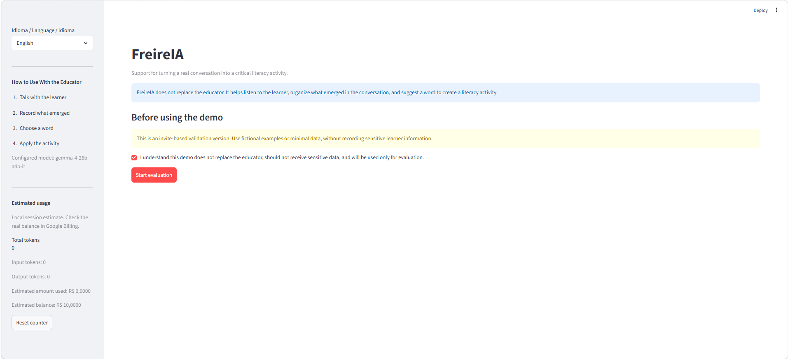
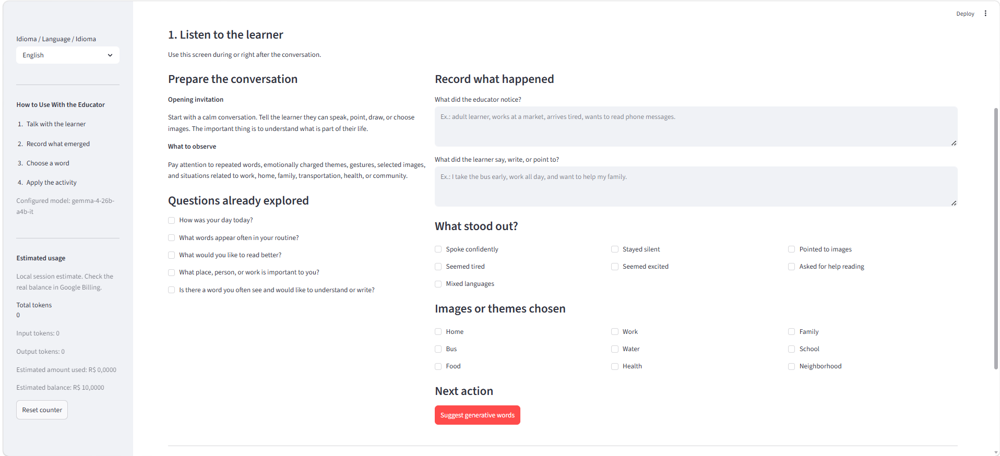
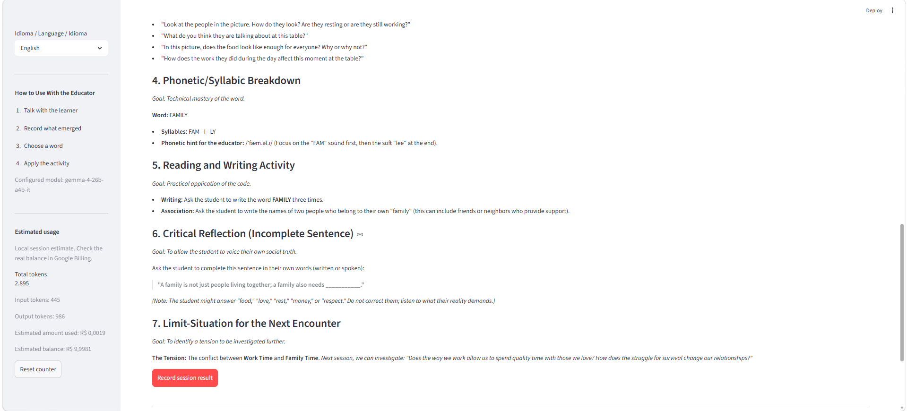
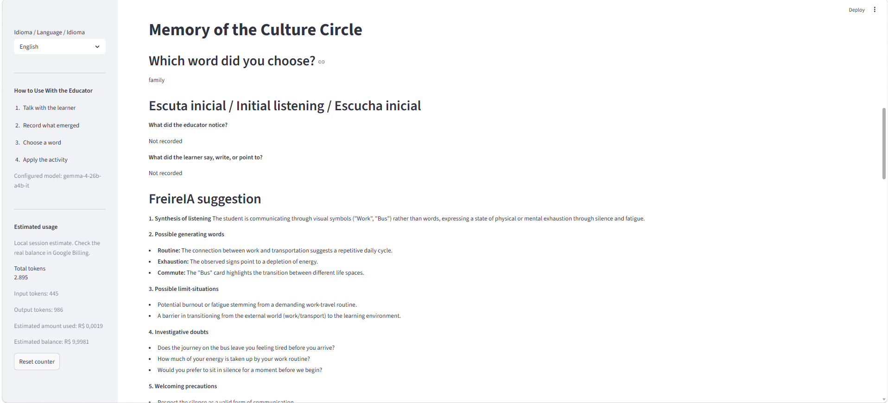
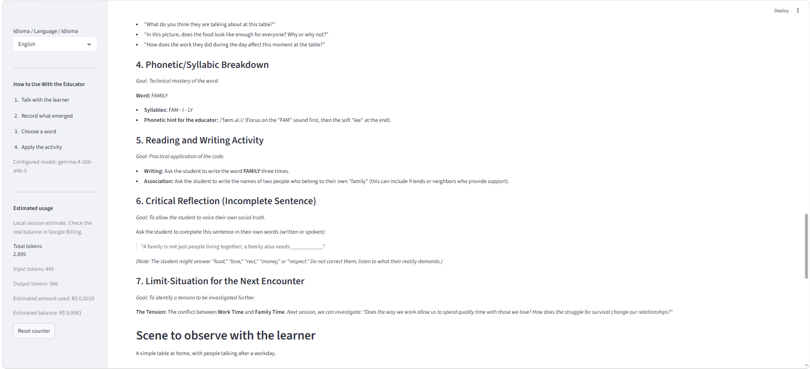
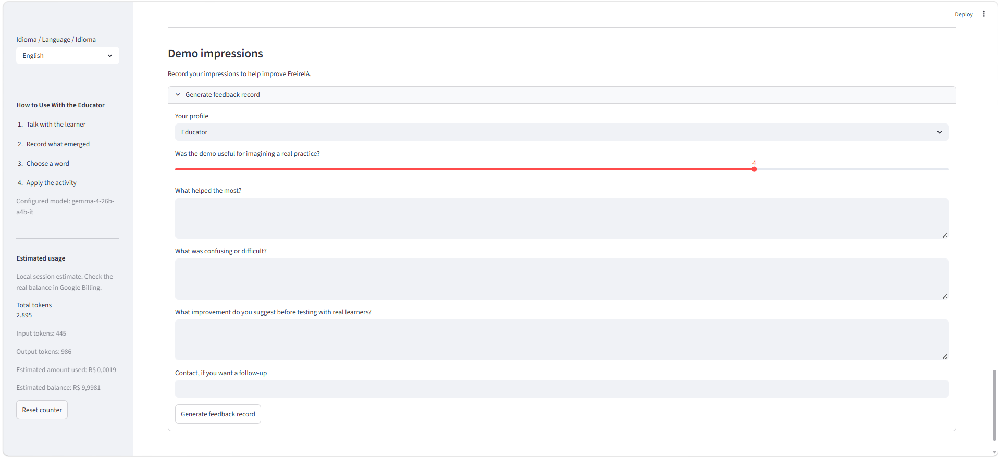

From listening to action
FreireIA supports one specific educator workflow: listen to the learner, choose a generative word, create an activity, and preserve the memory of the Culture Circle.
Version path
The roadmap keeps the demo focused for judges while showing how the project can mature into a pilot and then a deployable literacy platform.
Built for useful proof
The demo is designed to prove the educational workflow end to end, not to hide behind a generic chatbot surface.
Demo screens
Screenshots from the current FreireIA flow.






Impact stance
FreireIA does not replace the educator. It helps organize listening, preserve learner context, and reduce the distance between conversation and meaningful literacy practice.